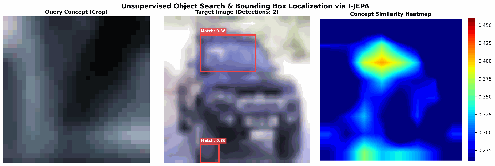

Série Recherche Visuelle & Localisation d'Objets sans Supervision Dans cette troisième partie de notre douzième article, nous mettons en pratique notre pipeline de recherche visuelle. Nous verrons comment calibrer les deux hyperparamètres fondamentaux de notre système de détection sans supervision : le Seuil de Similarité Cosinus ($\tau$) et la taille minimale des composantes connexes (
--min-patches). Nous expliquerons comment leur réglage permet de trouver le point d'équilibre optimal entre Précision (éviter les faux positifs) et Rappel (éviter les faux négatifs).
🎛️ Les deux boutons de contrôle de notre pipeline
Notre moteur de recherche d'objets sans supervision s'appuie sur deux hyperparamètres complémentaires pour extraire et valider les boîtes englobantes :
- Le Seuil de Similarité Cosinus ($\tau$) : Il s'applique à chaque patch individuellement. Il décide si le contenu d'un patch est sémantiquement assez proche de la requête pour être activé ($1$).
- Le Nombre Minimal de Patches (
--min-patches) : Il s'applique aux groupes de patches (les composantes connexes trouvées par le BFS). Il décide si une "île" de patches actifs est assez grande pour former un objet valide, ou s'il s'agit d'un bruit de fond à ignorer.
Ces deux paramètres agissent comme un filtre à deux étages : le premier filtre au niveau des pixels/concepts locaux, le second filtre au niveau de la cohérence spatiale.
🔬 Calibrer le Seuil de Similarité ($\tau$)
Comme nous l'avons étudié à l'Article 11, le choix du seuil s'accompagne d'un compromis classique de Machine Learning :
- Un seuil élevé ($\tau \ge 0.45$) :
- Avantage (Haute Précision) : Seuls les patches extrêmement similaires au concept de requête sont retenus. Le bruit d'arrière-plan et le ciel sont totalement éliminés.
- Inconvénient (Faible Rappel) : Si l'objet dans l'image de test présente une légère variation de forme ou d'orientation par rapport au crop d'origine, certains de ses patches descendront sous le seuil et l'objet sera manqué (faux négatif) ou sa boîte englobante sera trop petite.
- Un seuil bas ($\tau \le 0.28$) :
- Avantage (Haut Rappel) : Le modèle est très tolérant et détectera l'objet même s'il est partiellement caché ou déformé.
- Inconvénient (Faible Précision) : Beaucoup de patches d'arrière-plan neutres s'activeront, créant des faux positifs ou fusionnant plusieurs objets distincts en une seule boîte englobante géante.
🧼 Filtrer le bruit spatial avec
--min-patches
Même avec un bon seuil $\tau$, il arrive souvent que 1 ou 2 patches isolés d'arrière-plan franchissent le seuil par pure coïncidence géométrique. Sans filtre de taille, le modèle dessinerait de toutes petites boîtes englobantes parasites partout sur l'image.
C'est là qu'intervient l'argument --min-patches ($P_{min}$) :
Grille binarisée (τ = 0.35) Detections avec P_min = 3
┌───┬───┬───┬───┬───┐ ┌───┬───┬───┬───┬───┐
│ 0 │ 0 │ 0 │ 1 │ 0 │ <-- Bruit (1 patch) │ 0 │ 0 │ 0 │ 0 │ 0 │ <-- Ignoré !
├───┼───┼───┼───┼───┤ ├───┼───┼───┼───┼───┤
│ 0 │ 1 │ 1 │ 0 │ 0 │ │ 0 │ 1 │ 1 │ 0 │ 0 │
├───┼───┼───┼───┼───┤ ├───┼───┼───┼───┼───┤
│ 0 │ 1 │ 1 │ 0 │ 0 │ │ 0 │ 1 │ 1 │ 0 │ 0 │ <-- Gardé (4 patches)
├───┼───┼───┼───┼───┤ ├───┼───┼───┼───┼───┤
│ 0 │ 0 │ 0 │ 0 │ 0 │ │ 0 │ 0 │ 0 │ 0 │ 0 │
└───┴───┴───┴───┴───┘ └───┴───┴───┴───┴───┘
- Si
--min-patches= 1 : Le modèle dessine une BBox pour chaque patch isolé actif. Très sensible, mais extrêmement bruyant. - Si
--min-patches= 3 (Recommandé pour Saccadic-JEPA) : Le modèle ignore toutes les composantes connexes contenant moins de 3 patches. Le petit bruit isolé est balayé, seules les zones cohérentes et consolidées de l'image (les vrais objets) sont retenues. - Si
--min-patches= 6 : Le modèle n'accepte que les très grands objets. Excellent pour isoler un véhicule entier au premier plan, mais inadapté pour localiser des détails ou des objets éloignés.
🛠️ Guide pratique de calibration (Scénarios d'usage)
Voici comment ajuster vos paramètres dans la ligne de commande de notre script
unsupervised_search.py :
🚗 Scénario A : Vous cherchez un grand objet net (ex: une voiture entière)
L'objet occupe une surface importante dans l'image.
- Réglage :
--threshold 0.35 --min-patches 4 - Pourquoi : Avec 4 patches minimum, vous filtrez tous les faux positifs de route ou de ciel. La voiture, étant grande, activera facilement 4 patches connexes.
🎡 Scénario B : Vous cherchez un détail précis ou un petit objet (ex: une roue)
Le détail recherché est petit et localisé.
- Réglage :
--threshold 0.35 --min-patches 1ou2 - Pourquoi : Une roue dans une petite image peut ne couvrir qu'un seul ou
deux patches. Mettre
--min-patches 3ferait disparaître la détection. On accepte un peu plus de bruit au profit d'un meilleur rappel.
🌳 Scénario C : L'image de test a un arrière-plan très encombré (ex: forêt)
L'arrière-plan complexe génère de nombreux faux positifs de textures.
- Réglage :
--threshold 0.45 --min-patches 2 - Pourquoi : On augmente le seuil sémantique à $0.45$ pour rendre le premier niveau de filtrage beaucoup plus sélectif et bloquer les fausses détections de texture, tout en maintenant le nombre de patches à 2 pour ne pas rater l'objet s'il est partiellement masqué.
🚀 La démo pratique !
Nous avons écrit un script de démonstration complet demo_unsupervised_search.py
qui
télécharge CIFAR-10, extrait une requête de voiture et scanne les images cibles.
python jepa_lab/demo_unsupervised_search.py --model-type saccadic --threshold 0.35 --min-patches 2
Ce script va générer des figures comparatives dans
jepa_lab/runs/demo_search_result_*.png.
📊 Analyse d'une détection concrète : Le cas de la Voiture (Image 9)
Voici l'un des résultats obtenus lors du scan d'une image cible de voiture pour laquelle nous avons sélectionné une requête sous forme de crop représentant une roue (je sais il y a plus esthétique comme crop 😅 mais on joue qu'avec des images CIFAR-10):

🔍 Pourquoi le pare-brise a-t-il été pris pour une roue ?
Si vous regardez attentivement l'image ci-dessus, le modèle trace une boîte rouge autour des roues réelles, mais également une boîte englobante parasite autour de la jonction du pare-brise et du capot/montant de toit.
Ce phénomène s'explique par plusieurs facteurs géométriques, latents et techniques :
- La signature des contours (Gradients locaux) : À l'échelle d'un patch ($16 \times 16$), le montant avant du pare-brise présente une transition abrupte à fort contraste entre une zone sombre (le verre/l'habitacle) et une zone claire et colorée (la carrosserie), formant une structure courbe ou en diagonale. Pour l'encodeur de contexte ViT, cette combinaison de gradients est très similaire aux bords d'une roue (qui alternent aussi entre obscurité du pneu et luminosité du pneu/sol).
- Le biais d'auto-supervision : N'ayant jamais reçu de labels humains (qui lui diraient "ceci est une vitre, pas une roue"), le modèle JEPA regroupe les concepts uniquement par leur structure visuelle et leur contexte statistique. Les roues et le pare-brise partagent des propriétés géométriques dans le domaine latent des formes de carrosserie.
- Le regroupement BFS : Comme le seuil $\tau$ était réglé à $0.35$, les patches du pare-brise ont été activés. Étant adjacents, ils ont formé un groupe de taille $\ge 2$, validant ainsi la création d'une boîte englobante.
- Le flou d'upscaling ($32\times32 \to 128\times128$) et le sous-entraînement (120 époques) : L'interpolation de résolution : Les images d'origine de CIFAR-10 ne font que $32\times32$ pixels. Pour notre modèle Saccadic, nous les agrandissons artificiellement par interpolation à $128\times128$. Cela crée un flou d'interpolation qui lisse les arrêtes. Au niveau d'un patch, les contours nets d'une roue et ceux du pare-brise se retrouvent tous deux lissés. Ce manque de hautes fréquences visuelles rend leurs signatures sémantiques très similaires dans l'espace latent.
- Sous-apprentissage relatif : Un entraînement de 120 époques est relativement court pour de l'auto-supervisé (les papiers officiels s'étendent de 300 à 800 époques). À ce stade, le réseau a appris à regrouper les formes géométriques primaires et les co-occurrences, mais n'a pas encore une finesse de discrimination suffisante pour séparer proprement des sous-composants locaux aussi proches.
Comment connaître le nombre de patches de chaque boîte ?
Lors de l'exécution de unsupervised_search.py (ou de la démo), les détails
de chaque boîte de détection sont affichés directement dans votre console. Le script
affiche une ligne de log détaillée contenant le paramètre Size :
text
BBox 1: [84, 96, 120, 128] | Confidence (Mean Sim): 0.4124 | Max Sim: 0.4456 | Size: 3 patches
La valeur Size: X patches vous indique précisément le nombre de patches
connexes activés pour cette boîte englobante. C'est l'indicateur parfait pour calibrer
votre argument --min-patches !
🛠️ Défi de curiosité n°10
Dans notre grille Saccadic-JEPA de $8\times8$ patches (soit 64 patches au total pour une image de $128\times128$ pixels) :
- Quelle proportion en pourcentage de la surface totale de l'image représente un seuil
--min-patches 4? - Si vous passiez à une grille plus fine de $16\times16$ patches (soit 256 patches pour une même image), quelle proportion représenterait ce même réglage de 4 patches ?
- Pourquoi est-il indispensable d'augmenter la valeur de
--min-patcheslorsque la résolution de la grille de patches augmente ?